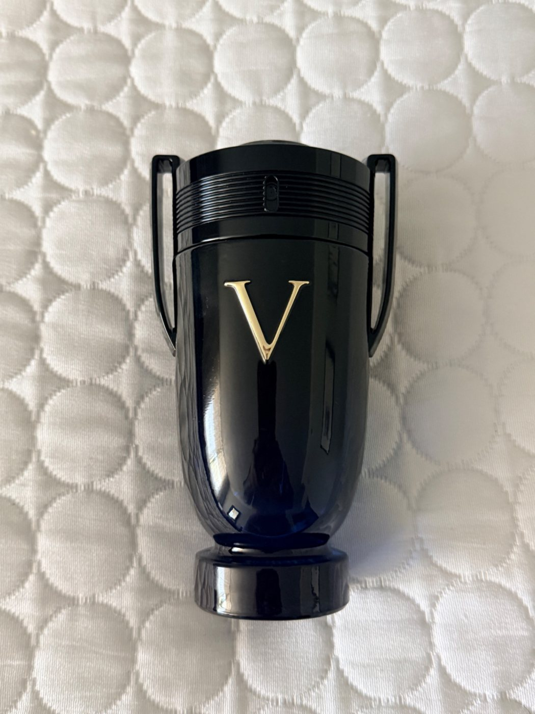

If you want a fragrance that lasts all day and gets compliments, this is one of my top recommendations.
As an Amazon Associate, I earn from qualifying purchases.
I love smelling nice and I've tried several different versions of Invictus over the years. Out of all of them, the Victory Elixir is my favorite. On my skin the scent lasts more than 9 hours, and I've received many compliments while wearing it.
If you're looking for a long-lasting fragrance, this is one you can confidently buy. It has become one of the standout fragrances in my collection.
This is a gem. If you're deciding between the different Invictus fragrances, this is the one I'd choose. You can close your eyes, buy it, and I don't think you'll be disappointed.